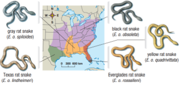
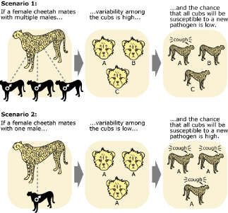
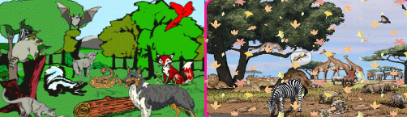
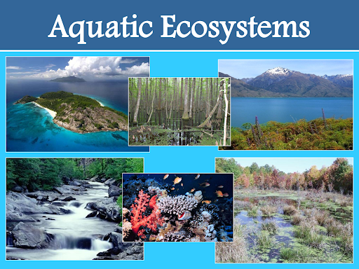

Biodiversity
What is biodiversity?
Biodiversity is the variety and number of life forms on Earth.
What are species?
Species- all organisms capable of breeding freely with each other under natural conditions.
It is important to note that members of different species usually do not breed with one another.
For example, under natural conditions lions breed only with lions, robins breed only with robins, and so on.
What is Hybridization?
Two plants that appear to be distinct species may occasionally undergo hybridization under natural conditions, forming a cross between the two species hybridization- the cross-breeding of two different species.
Example of Hybridization
Vascostylis Prapawan 'Tanzanite' AM/AOS is a combination of three orchid genera: Ascocentrum x Rhynchostylis x Vanda.
What is Morphology?
The physical appearance and characteristics of an organism; also, the science of the study of these physical characteristics

Five subspecies of rat snakes
These snakes are all considered members of the same species. They exhibit differences in color and the presence or absence of stripes, depending on their geographic location.
Callout
Variation over Time and Space
The physical and behavioral changes that occur in entire populations of a species over time are referred to as evolutionary changes.
Individual Variability
The individuals of any given species may show subtle differences. However, these individuals still belong to the same species and are members of the same breeding population. Humans exhibit individual variability but are all members of the same species.
Variation over Time and Space
Species also change over time and space. They can evolve, or change, over many generations, and they can change across continents. Populations may separate and, over time, may form entirely new species.
What is Genetic Diversity?
It is the genetic variability among organisms; usually referring to individuals of the same species.

True or False
Write true for every correct statement, and false if not. In every “false” answer, underline the statement that makes it incorrect.
True or False
True or False
True or False
True or False
Callout
Diversity in Ecosystems
Ecosystems are made up of many different species and their physical environment. All these species depend on other species in some way for their own survival. Heterotrophs are organisms that cannot make their own food, and feed on other living or dead organisms.
Autotrophs are organisms that are able to make their own food. Plants are examples of autotrophs. They depend on microorganisms to recycle nitrogen, carbon, and other nutrients as part of biogeochemical cycles, and many depend on animals for pollination.
Callout
Diversity of Interactions
The interdependence of one species on another goes far beyond simple food chains and biogeochemical cycles. For example, the important activities and processes of one species may depend entirely on another species for success. Species support each other, and they also contribute to the stability and productivity of their ecosystems.
Plant communities with a greater number of species are better able to withstand and recover from diseases, climate extremes, and pest infestations. They are also more biologically productive than plant communities with fewer species. For example, researchers have found that grasslands with mixed species are more than twice as productive as grasslands planted with a single species.
Diversity is therefore also influenced by the total number of individuals present in an ecosystem. An ecosystem with many large populations is considered more diverse than an ecosystem made up of smaller populations

Callout
Diversity of Habitats
The range of physical sizes, shapes, and distribution of the individuals, as well as habitats and communities in an ecosystem, are together referred to as structural diversity. Structural diversity is critical for biodiversity because it creates microhabitats with a variety of abiotic conditions.
An ecosystem with greater structural diversity can support a greater diversity of species it has greater biodiversity. This is why the biodiversity of a healthy rainforest is much greater than that of an even-aged tree plantation, in which all trees are the same height.
11.png)
Callout
Aquatic ecosystems also exhibit a great range of structural diversity.
Flat, smooth ocean bottoms offer little shelter for organisms, while irregular bottoms with rocks, reefs, logs, or even sunken ships enhance the range of microhabitats available for organisms.

Species Interactions
Food supply
Complex relationships exist between species and their food.
Example:
Bone Worms feed exclusively on the bones of dead whales that sink to the bottom of the ocean.
Photosynthetic microorganisms live inside the bodies of giant clams and coral animals on reefs. They perform photosynthesis and supply the clams and corals with a steady supply of food.
Protection
Many species depend on others for shelter and protection.
Example:
- Hermit crabs use the shells of dead snails for a protective home.
- Certain species of ants live within the trunks of Cecropia trees. The trees provide shelter for the ants. The ants protect the tree by biting and stinging any herbivores that try to eat from it.
Transportation
Many species move from place to place with the help of other species.
Example:
- Some flower mites climb onto the bills of hummingbirds moving from flower to flower feeding on nectar.
- Many seeds have hooks that allow them to stick to passing animals. They can then be carried long distances before they fall off and begin growing.
Reproduction
Many species depend on other species for their own successful reproduction.
Example:
- Trilliums produce seeds with fleshy tissues that attract ants. The seeds are then gathered and dispersed by the ants. If the ants do not feed on this outer seed tissue, the seeds cannot germinate.
- Many bird species build their nests in the abandoned tree cavities made by woodpeckers for their own nests.
Hygiene
Some species help maintain the health of other species.
Example:
- Coral reefs have “cleaning stations” where large fish come to have external parasites removed by small fish and shrimp.
- The bacteria that naturally live on our own skin help protect us from other bacterial and fungal infections.
Digestion
Species living within digestive tracts are essential for the digestion of food.
Example:
- Termites consume wood but are almost entirely incapable of digesting it themselves. Instead, a variety of bacteria and other microorganisms living within the termites’ guts do the digestion for them.
- Bacteria living in the large intestines of humans produce vitamins that are absorbed into the circulatory system.
Callout
Biodiversity at Risk
The loss of biodiversity affects humans in many ways. Loss of biodiversity
- threatens our food supply when entire species and plant varieties are lost
- eliminates sources of natural medicines and potential new medicines
- has a significant economic impact on tourism and forestry when accompanied by habitat destruction
- has the potential to cause serious disruptions in biogeochemical cycles, including normal carbon uptake by natural ecosystems
Human actions are resulting in a rapid loss of natural habitats due to agriculture, forestry, urban expansion, the introduction of invasive species, over-harvesting of wild populations, and serious air and water pollution. The production of greenhouse gases is also resulting in human-caused climate change.
1.png)
This healthy caribou is shedding the “velvet” from its set of large antlers. Unfortunately, caribou and other Arctic species are already starting to feel the impacts of climate change.